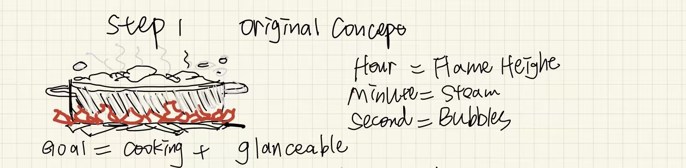
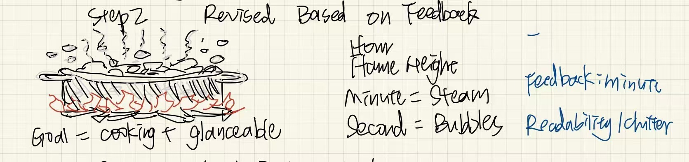
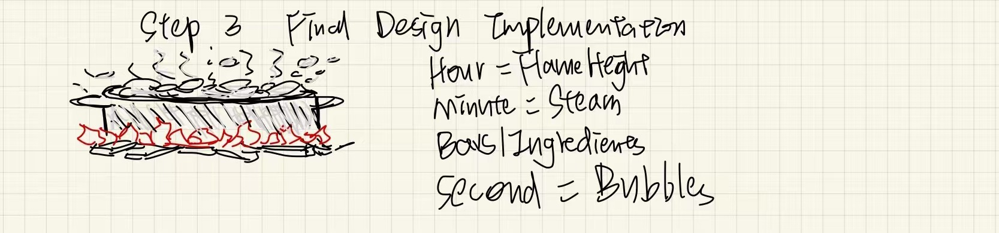

Boiling Pot Clock — Sketch narrative
Hours map to burner flame count. Minutes map to water level. Seconds appear as bubble activity and subtle surface motion, keeping the display “alive” without requiring small digits.
Sketch evolution



Sketch B — Sketch narrative
This version explores an alternative cooking-themed encoding with clearer separation between hour/minute/second channels, to improve glanceability while multitasking.
Steam Bar Kitchen Clock — Sketch narrative
Minutes become a 60-bar steam chart for fast scanning; hours use heat/flame cues; seconds are motion-only so the layout stays calm.